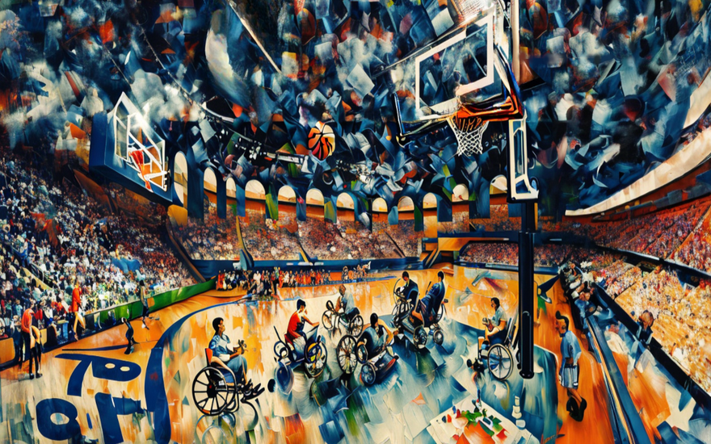
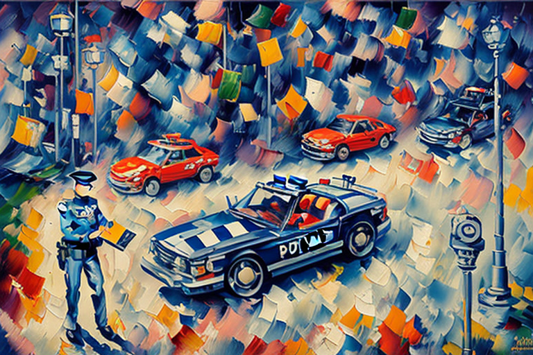
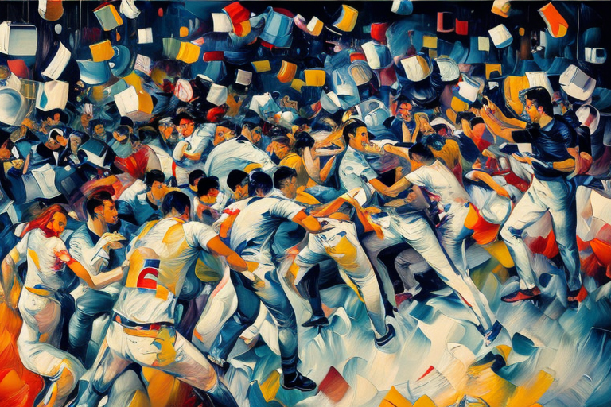
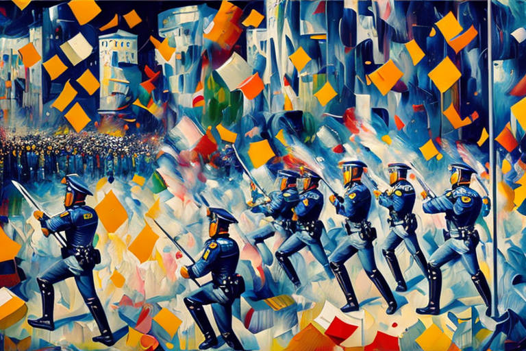

Alphaeus and the handicapped basket game
HOME
Table of Contents
Rising Above

Alphaeus was your average guy - except for one tiny detail that set him apart from everyone else: he was stuck in a wheelchair. It wasn’t like Alphaeus didn’t try his best to get out and experience life like any other 20-something year old. He just couldn’t seem to escape the confines of his disability.But Alphaeus never let it bring him down. In fact, he used it as an opportunity to connect with others who were going through the same thing.
And that’s how he found himself at a local community center, participating in a pickup game of wheelchair basketball. As Alphaeus dribbled the ball, he felt something odd happening. His legs weren’t the only things getting a workout tonight; his arms seemed stronger than usual too. By halftime, he had scored more points than anyone on his team.
And then, right before his very eyes, the impossible happened. Alphaeus sprung up from his chair and ran full speed towards the basket. It was like someone flicked a switch inside of him, unlocking abilities he never knew existed. The crowd erupted into cheers as he sank the shot, but all Alphaeus could think about was what had just occurred. How did this happen? Was this some sort of miracle or was there another explanation behind it? Whatever the reason may be, Alphaeus knew that things would never be the same again.
As the sun rose over the horizon, Alphaeus couldn’t help but feel a sense of anticipation bubbling up within him. Could it really have been a dream last night - scoring those points while standing upright on the court? No way, he thought to himself. That feeling of liberation from his wheelchair was real, and he planned to make the most of it by taking the field today at the big handicap basketball tournament.
For once, Alphaeus felt like he was on equal footing with everyone else. No longer would he need the assistance of those flimsy metal bars to propel himself forward - instead, he would run and score shots like any player on the pitch. He couldn’t wait to show off his newfound skills to his fellow wheelchair users, many of whom spent countless hours training under the assumption they would always remain bound to their chairs.
The whistle blew, signaling the start of the biggest game of the year. Alphaeus took control of the ball, stood up on his own two legs and immediately made a break for the goal, leaving defenders in his dust. With each step, he could hear gasps of amazement coming from the stands. Even his own teammates looked stunned, unsure of whether to celebrate or call foul play. But Alphaeus paid them no mind, knowing deep down that these limitations placed upon society were nothing but arbitrary constructs created by those afraid of change. As they say, “where there’s a will, there’s a wheeled-way.”
Fair Play, Fierce Competition

After Alphaeus made that unbelievable shot, the atmosphere in the stadium changed dramatically. Fans of both teams were stunned by the sudden turn of events. Some were rooting for their home team to come back strong, while others wanted the opposing team to crush them.
However, once the initial shock wore off, the tension between rival fan bases grew thick enough to cut with a knife. Supporters of the opposing team accused Alphaeus’s squad of cheating, claiming that his newfound ability to walk was unfair.
On the other side, diehard fans of Alphaeus’s club saw nothing wrong with what just happened. After all, if Alphaeus’s legs worked better now than they ever have before, shouldn’t that count as a win for their team?
With tempers flaring and emotions running high, chaos threatened to break loose. People started shouting insults, challenging each other to step outside the arena for a good old-fashioned brawl. Security personnel quickly moved in, trying desperately to maintain order before things got out of control.
Amidst the craziness, coaches and referees huddled together, debating whether Alphaeus should be allowed to continue playing. Should his new abilities be considered fair or foul? After much deliberation, they finally came to a decision: Alphaeus could stay in the game, but only on one condition - he must wear a special device around his waist, designed to keep his legs immobilized like a traditional wheelchair user.
Of course, this ruling didn’t sit well with either set of supporters. Some argued that it put an unfair burden on Alphaeus, limiting his natural talents for the sake of adhering to antiquated rules. Others countered that allowing him to run free without restriction gave him an unfair advantage, essentially rendering the competition pointless.
In the end, though, Alphaeus chose to comply with the regulations. After all, winning wasn’t everything - showing respect for the sport and its guidelines mattered just as much. Plus, he still managed to score plenty of points despite the extra restraints. By the final buzzer, his team emerged victorious amidst a swirl of controversy and applause.
A Ticket to Trouble

As the dust settled after the contentious game, players from both teams retreated to their locker rooms. However, one particular spectator refused to leave quietly. A burly man sporting a hat emblazoned with the emblem of the opposing team stormed out of the arena, visibly seething with rage.
Little did anyone know, this enraged fan wasn’t just any ordinary supporter. In reality, he was an undercover cop working a sting operation against disability fraud, moonlighting as a fan at the event. Johnson marched over to the parking lot, determined to teach Alphaeus a lesson he wouldn’t soon forget.
Sure enough, upon reaching Alphaeus’s vehicle, he spotted the vehicle, parked in a handicapped spot. Without hesitation, Johnson slapped on a citation, grinning like a Cheshire cat as he recorded the make, model, and license plate number of Alphaeus’s ride.
Alphaeus emerged from the locker room moments later, blissfully unaware of the impending chaos. As he turned the corner, he caught sight of Detective Johnson scribbling away on his notepad. With a sinking heart, Alphaeus knew instantly what had transpired.
Alphaeus tried reasoning with Johnson, attempting to explain his unique circumstances and how his new legs operated differently from traditional prosthetics. But Johnson would hear none of it. He saw this as an opportunity to prove his commitment to cracking down on those who took advantage of disability accommodations.
Before either party could react, a group of rowdy fans charged toward the scene, fueled by equal parts adrenaline and alcohol. Shouts and curses filled the air, pitting loyalists of both clubs against each other like dogs fighting over a juicy bone.
Meanwhile, inside the locker room, Coach Taylor tried to gather his thoughts and come up with a plan. He needed to defuse the situation before someone got seriously hurt. His mind raced as he mentally sorted through the available options. His first inclination was to call for backup from local law enforcement agencies. But then again, involving more authorities might escalate tensions further instead of diffusing them. No, he thought, there has to be a better solution.
That’s when he remembered his past experience as part of a community outreach program, which taught mediation techniques for resolving conflicts between rival gangs. The key element was listening attentively to others’ perspectives, acknowledging their feelings, and finding common ground based on shared interests. Coach Taylor swiftly composed himself, took a deep breath, and strode purposefully towards the door leading outside. Before he reached the entrance, however, something unexpected occurred that temporarily diverted his attention.
Restoring Peace

Just as it seemed matters couldn’t get worse, Johnson removed his disguise, revealing his badge and gun. “This whole place is under arrest!” he declared triumphantly.
But alas, the damage had already been done. The scene erupted into utter chaos, with fans hurling epithets, objects, and even punches at one another. Pandemonium ensued, with bodies flying everywhere as fights broke out among the mob. It felt like anarchy incarnate.
Inside the locker room, Johnson caught sight of a familiar face - Officer Petrus Celer, the beat cop tasked with keeping watch on the facility during events. Realizing this was no ordinary altercation but rather a potential riot, Johnson decided to defer to Petrus’s superior training and expertise in crowd control.
While Johnson focused on restraining his target, Petrus approached the melee strategically, attempting to isolate pockets of conflict and neutralize them one by one. This technique involved forming a phalanx with fellow officers to encircle combative individuals, gradually funneling them toward a secure area where arrests could be made peacefully.
Amidst the chaotic scene, Petrus an avid reader of Roman history, stepped forward to take charge. Known for his fearless leadership and unwavering dedication to upholding justice, he quickly assessed the situation and issued directives to his subordinates. His voice boomed like thunder across the parking lot:
“Stabiliter avanti! Stabilimentum prae caedit nunc est tempora vindictae.” (“Steady forward! The time for retribution is now.”) With those words echoing in their ears, the officers pressed forward, their tight formation resembling a impenetrable wall of shields and armor. They pushed relentlessly against the hostile throng, seeking to contain the violence within the designated perimeter around the disputed disabled parking space. The barrage of projectiles intensified, bombarding the advancing phalanx with a hail of rocks, bottles, and even molotov cocktails.
Flames engulfed several vehicles nearby, casting an eerie glow across the turbulent landscape. Despite these perils, the intrepid policemen maintained their resolve, steadfastly holding the line in defense of order and righteousness. Through sheer force of will and disciplined teamwork, they managed to repel the most belligerent protestors, driving them back into adjacent alleys or side streets.
The Long Road Home
Once the immediate danger subsided, Petrus Celer convened a council with his command staff. Their mission now transformed from quelling civil unrest to assessing damages and ensuring public safety remained paramount.
After carefully weighing his options, Petrus Celer arrived at a decision: despite ample justification for arresting the rowdy spectators responsible for inciting the commotion, the Chief chose to show clemency. Rather than subject these impassioned souls to lengthy court battles and possible detention, he determined it would be wiser to focus resources on addressing the immediate aftermath of the incident.
First and foremost, all affected vehicles required thorough examinations to catalogue the extent of property damages. To minimize disruptions, police teams set about inspecting each automobile in the parking areas closest to the sporting arena, taking meticulous notes and photographs of every scratch, dent, or shattered window.
Meanwhile, the handicapped athletes and officials directly impacted by the dispute found themselves facing unexpected hardships. Since none among them possessed alternative transportation arrangements, they faced a daunting predicament: how to make the long journey home without access to functioning vehicles? Since many of their personal conveyances suffered significant damage, the handicapped players had little choice but to roll themselves homeward along the roads surrounding the arena. The distance varied depending on their homes’ locations, making it a slow and arduous journey fraught with difficulties - especially in the dark hours of the early morning.
For Alphaeus, who retained full use of his legs, walking back represented a far less daunting prospect. Thus, he bade farewell to his comrades, electing to traverse the remaining miles under his own power. Nevertheless, the bittersweet reunion with family and friends awaited him upon finally reaching his front doorstep.